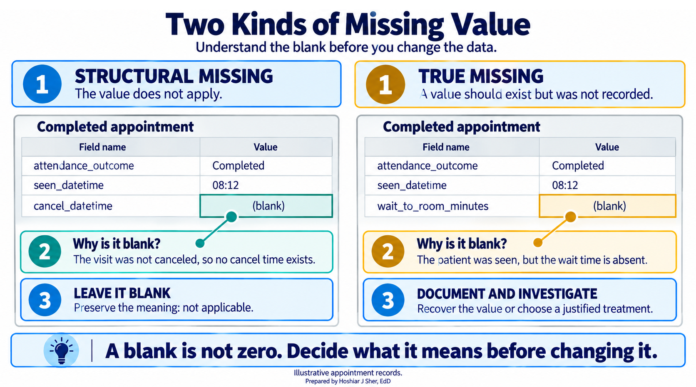
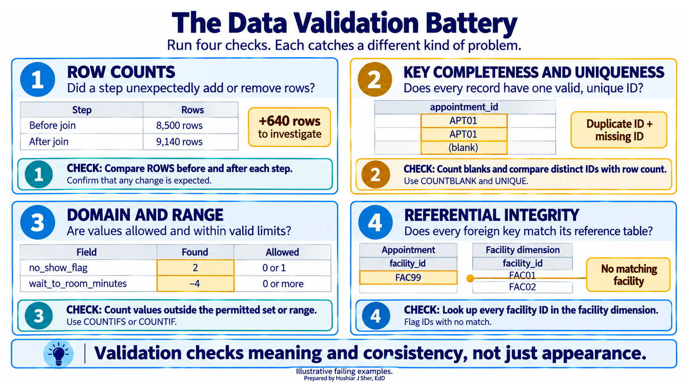
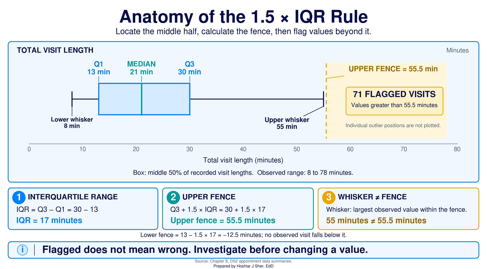
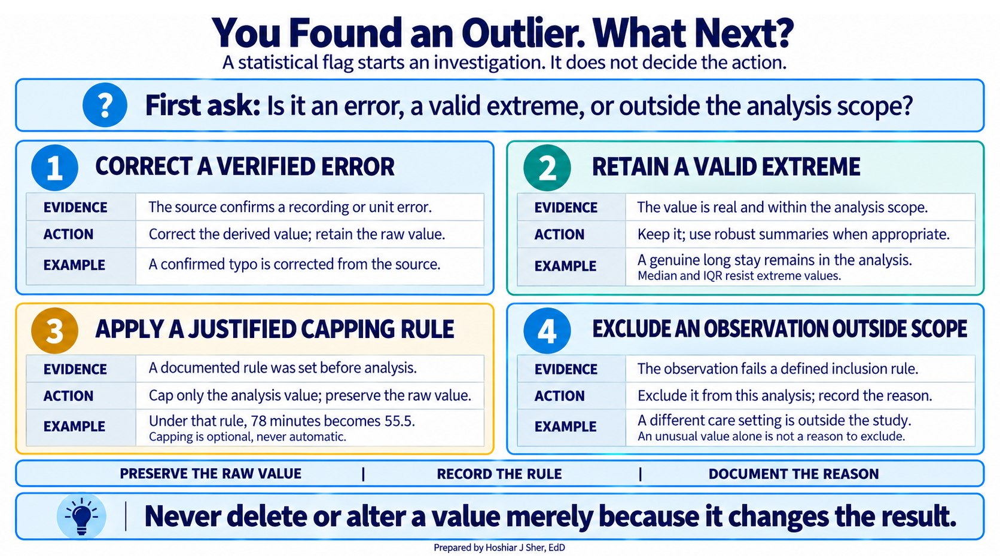
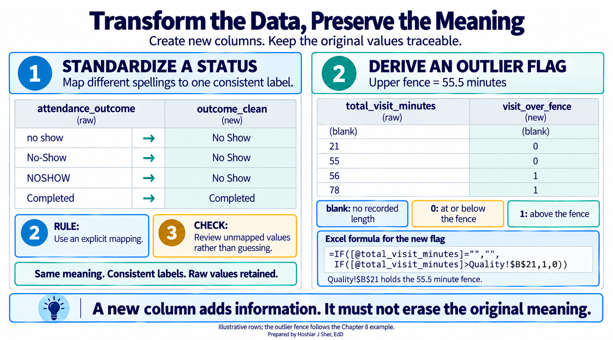
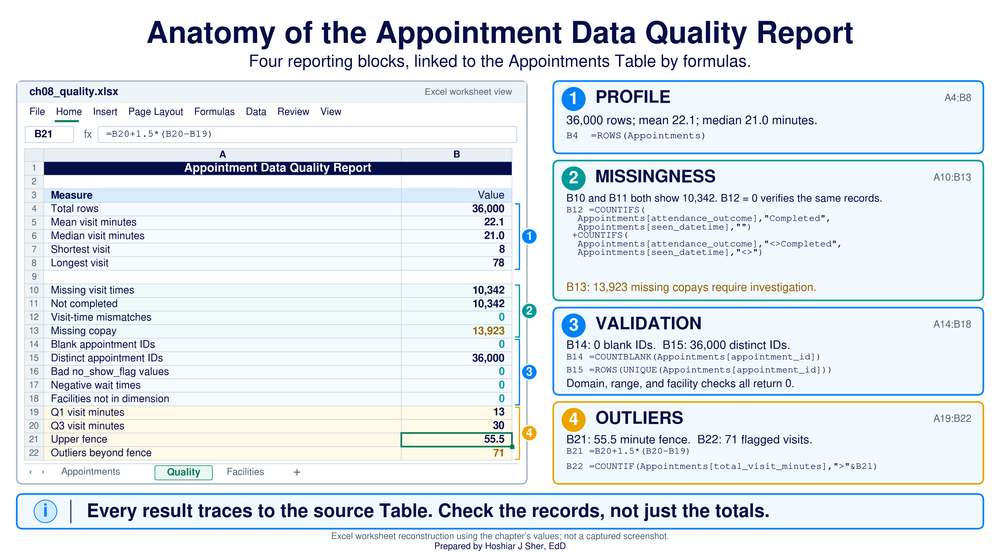
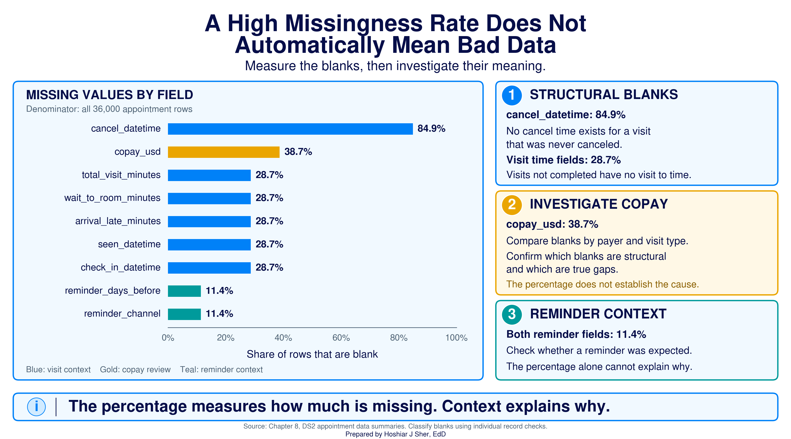

Cleaning, Transforming, and Validating Data
Opening scenario
An analyst opens an appointment export with 36,000 rows and sees blanks everywhere. The cancel time is empty for most rows, and the wait time is empty for thousands more. Her first instinct is that the file is broken and that someone lost data, and she is about to email the source team. Before she does, she checks one thing, and the concern resolves. The blanks are not lost data. They are the data telling her something, because you cannot record a cancel time for a visit that was never canceled. Cleaning is not the work of erasing blanks. It is the work of understanding them. This chapter is about making data trustworthy, which is a different job from making it look tidy.
A quick look at three appointments shows why a blank is not automatically an error. In Table 1, each outcome leaves a different field empty, and in every case the empty field is correct.
| appointment_id | attendance_outcome | seen_datetime | cancel_datetime |
|---|---|---|---|
| APT000126 | Completed | 2024-01-01 08:12 | (blank) |
| APT022207 | No Show | (blank) | (blank) |
| APT027760 | Early Cancel | (blank) | 2023-12-31 13:00 |
By the end of this chapter, you will be able to:
- Distinguish structural missing data from true missing data, and choose the right response to each.
- Profile a dataset with counts and summary statistics before you analyze it.
- Run a validation battery: row counts, key uniqueness, domain and range, and referential checks.
- Detect outliers with the 1.5 times IQR (interquartile range) rule and decide what to do with them.
- Transform fields safely without changing what the data means.
- Build cleaning steps you can trust and repeat.
Key concepts
Data cleaning is the work of making a dataset trustworthy, not the work of making it look neat. A file can look tidy and still be wrong, and a file full of blanks can be perfectly correct. This section builds the judgment and the checks that separate trustworthy work from fragile spreadsheet output, in four parts:
- missingness, distinguishing a blank that is correct from a blank that is a gap,
- profiling, looking at a column’s shape before computing on it,
- validation, a short battery of checks that catches most problems,
- outliers and transformation, handling extreme values and reshaping data without changing its meaning.
Two kinds of missing value
Data cleaning is the work of making a dataset trustworthy and ready for analysis. Structural missing data is blank because the value does not apply to that record. True missing data is blank when a value should exist but was not recorded.
A common mistake is to treat every blank as an error. There are two kinds of missing value, and they call for opposite responses:
- Structural missing is correct and must stay empty.
A canceled appointment has no seen-time, so
seen_datetimeis blank, and that blank is the right answer. - True missing is a real gap you have to handle. A wait time absent for a patient who was clearly seen is a value that should exist, so it needs a documented decision about whether to record, impute, or exclude it (Little & Rubin, 2019).
Figure 1 puts the two side by side. The rule that follows is strict: filling a structural blank with a zero is not cleaning, it is corruption, because it invents an event that never happened.

Before you touch a blank, decide which kind it is. Structural missing means “not applicable” and should stay empty. True missing means “should be here but is not” and needs a documented decision, never a silent fill.
Filling structural blanks with a zero is the most damaging “cleaning” an analyst can do. A zero is a number, so it enters every average, sum, and chart as if a real event had happened. The real-world spotlight at the end of this chapter shows a wait-time average that collapsed for exactly this reason.
Profiling: look before you compute
Data profiling is the quick first pass that describes each field, its count of values, its minimum and maximum, and its center, so you learn the shape of the data before you analyze it.
Profiling is the habit of looking before computing. Recall the
summary functions from Chapter 6, AVERAGE,
MEDIAN, MIN, MAX, and
COUNTA, and add a quick frequency count with
COUNTIF or a PivotTable. Run them on each numeric field
first, and three kinds of problem surface:
- An impossible value, such as an age of 200 or a negative wait time, shows up as a minimum or maximum that cannot be real.
- A heap, such as hundreds of records all recording exactly age 0, is invisible in the mean and median but shows up in a frequency count as a single value that repeats far more than its neighbors.
- A silent gap, such as a field that
COUNTAshows is far shorter than the row count, shows up as a count that does not match the number of rows.
Profiling does not fix anything. It tells you where to look, and it is the least costly check in this chapter. Chapter 9 builds on these same summaries to describe data for its own sake; here they are a diagnostic.
Validation is a battery of checks
Validation is the set of checks that confirm the data means what you think it means.
A few checks catch most problems, and a short, repeatable battery is the backbone of practical data cleaning (van der Loo & de Jonge, 2018). Figure 2 lays out the four checks, and none of them is advanced:
- Row counts. Count the rows before and after every step. A join or filter that changes the count unexpectedly is a warning sign.
- Key completeness and uniqueness. Confirm the primary key has no blanks and no duplicates, because a blank or a duplicate key silently distorts your counts.
- Domain and range. Confirm each field holds only
allowed values: a flag that is
0or1and nothing else (a domain check on an allowed set), and a wait time that is never negative (a range check on an interval). - Referential integrity. Confirm every foreign key still resolves to its dimension, the idea introduced in Chapter 4, so no facility or payer code points at nothing.

A dataset that passes every check has not passed by luck. It passes because you deliberately asked the questions a flawed dataset would fail. Run the same battery every time, and a new problem surfaces instead of hiding.
Outliers: unusually distant values
The battery so far asks yes-or-no questions. Outliers need a different lens, because an outlier may be a valid extreme or a data error, and a range check flags neither: each value, taken on its own, can fall within the allowed range.
An outlier is a value far from the bulk of the data. The quartiles split sorted values into four equal parts: the first quartile (Q1) is the 25th percentile and the third quartile (Q3) is the 75th. The interquartile range (IQR) is Q3 minus Q1, the span of the middle half. A value is an outlier under the 1.5 times IQR rule if it sits below Q1 minus 1.5 times IQR or above Q3 plus 1.5 times IQR.
A box plot draws this rule as a picture (Tukey, 1977). Figure 3 labels every part: the box spans Q1 to Q3, the line inside is the median, the whiskers reach the farthest ordinary values, and the dashed line is the upper fence at Q3 plus 1.5 times IQR. Anything past a fence is an outlier.

The fence is a short calculation you can run in Excel.
Compute the quartiles, then the fence, from the visit-length column:
=QUARTILE.INC(Appointments[total_visit_minutes], 1) returns
13 (Q1) and
=QUARTILE.INC(Appointments[total_visit_minutes], 3) returns
30 (Q3). The upper fence is
Q3 + 1.5 * (Q3 - Q1) = 30 + 1.5 * 17 =
55.5, and
=COUNTIF(Appointments[total_visit_minutes], ">"&55.5)
returns 71 outliers.
Detecting an outlier is straightforward. Deciding how to handle it is the harder task, and it calls for judgment rather than a reflex. Figure 4 lays out the four defensible choices:
- Investigate and correct when the value is a data error, such as a typo or a unit mix-up.
- Keep it when the value is real, and report it with a summary that resists outliers, such as the median and the IQR, rather than the mean.
- Cap at the fence only under a rule you state in advance, replacing a beyond-fence value with the fence value while keeping the raw value in place. (Replacing values beyond chosen percentiles with those percentile values is the related technique of winsorizing.)
- Exclude and document when the value falls outside the defined scope of the analysis, recording the rule and why you applied it.

The one move to avoid by default is deleting an outlier silently. It changes the result and leaves no trace, so no reviewer, including you, can tell what the number would have been. A valid observation should not be altered merely because it moves an average; when the skew is genuine, prefer a summary that resists outliers, such as the median, and keep the original value. If a value must go, exclude it on purpose and write down why.
Transforming without distorting
Transformation is reshaping data into the form analysis needs, such as standardizing dates, mapping messy codes to clean ones, or deriving a new column like a length of stay from two timestamps.
The rule is simple and strict: a transformation may change the shape of the data, but it must not change its meaning. Figure 5 shows the safe pattern, mapping a messy status column to one standard value in a new column while the raw column stays untouched. Recall from Chapter 7 that a status field should hold one consistent value everywhere, a basic principle of well-organized spreadsheet data (Broman & Woo, 2018); making that true is a transformation. Silently rounding, recoding, or dropping rows in a way that shifts a result is not.

Keep the raw data untouched and transform into new columns or sheets. Then you can always trace a cleaned value back to the value it came from, which is what makes the cleaning defensible.
Open datasets/DS2_appointments_clean.csv and look at the
cancel_datetime column for three rows: one
Completed, one No Show, and one
Early Cancel. For each, decide whether a blank
cancel_datetime is structural or true missing, and say in
one sentence what you would do with it. Check your reasoning against
Table 1.
Walkthrough: build an appointment data-quality report
This build turns the raw appointment file into the one-page
data-quality report in Figure 6. Every number on it is computed by a
formula that reads from the Appointments Table, so when the
Table’s rows change, the report recalculates. To make next month’s
export refresh automatically, import it with Power Query as in Chapter
7; the report then updates with Data > Refresh All.
The report gathers four things in one place: a profile of the file, a
read on its missingness, the validation battery, and the outlier
count.

Before you start: open
datasets/DS2_appointments_clean.csv, and immediately save a
working copy as an Excel workbook so the original stays untouched. Work
only in the copy. These teaching files hold no real patient information;
real patient data must stay in approved, secure storage, and you should
make a local working copy only when you are authorized to.
Part A. Set up the data. Convert the raw file into a named Table so every formula can refer to its columns by name.
- Open
datasets/DS2_appointments_clean.csvin Excel. - Choose File > Save As, pick Excel
Workbook (.xlsx), and name it
ch08_quality.xlsx. Work in this file from here on. - Click any cell inside the data. On the Insert tab, click Table, confirm My table has headers is checked, and click OK.
- On the Table Design tab (named
Table on macOS), set the Table Name to
Appointments. - Add a worksheet with the + beside the sheet tabs,
double-click the new tab, type
Quality, and press Enter. - In
A1typeAppointment Data Quality Report. SelectA1:B1, choose Home > Alignment > Merge & Center, then make it Bold, size 14, with a dark blue Fill Color and white Font Color.
Part B. Profile the file. A handful of summary statistics describe the visit-length column before you trust it. These are the Chapter 6 functions used as a diagnostic.
- In
A3typeMeasureand inB3typeValue; selectA3:B3and click Bold. - In
A4typeTotal rows; inB4enter=ROWS(Appointments). CellB4shows36000. - In
A5typeMean visit minutes; inB5enter=AVERAGE(Appointments[total_visit_minutes]). It shows about22.1. The function ignores blanks, so this is the mean among visits that have a recorded length. - In
A6typeMedian visit minutes; inB6enter=MEDIAN(Appointments[total_visit_minutes]). It shows21. - In
A7typeShortest visit; inB7enter=MIN(Appointments[total_visit_minutes]). It shows8. - In
A8typeLongest visit; inB8enter=MAX(Appointments[total_visit_minutes]). It shows78. Neither extreme is impossible, so the profile signals no problem; the longest visit is one to examine later, not to delete.
Part C. Measure missingness. Count the blanks, then test whether they are structural. Figure 7 shows the same read as one picture: the cancel time is blank in 84.9 percent of rows (most visits were never canceled), the visit times in 28.7 percent (the not-completed visits), and the copay in 38.7 percent (the field to review).

- In
A10typeMissing visit times; inB10enter=COUNTBLANK(Appointments[seen_datetime]). It shows10342. - In
A11typeNot completed; inB11enter=COUNTIFS(Appointments[attendance_outcome], "<>Completed"). It also shows10342. Matching totals are a hint, not a proof, because two different groups can share a count, so confirm the records line up. InA12typeVisit-time mismatches; inB12enter
=COUNTIFS(Appointments[attendance_outcome], "Completed", Appointments[seen_datetime], "") + COUNTIFS(Appointments[attendance_outcome], "<>Completed", Appointments[seen_datetime], "<>")
It returns0: no completed visit lacks a seen-time, and no incomplete visit has one. The blank visit times are therefore structural. - In
A13typeMissing copay; inB13enter=COUNTBLANK(Appointments[copay_usd]). It shows13923, about 38.7 percent. This one matches no outcome group, so flag it for review rather than assuming it is acceptable; the Try It at the end of the chapter tracks down its cause.
Part D. Run the validation battery. Each check is a short formula, and each is expected to come back clean.
- Check the key for completeness and uniqueness. In
A14typeBlank appointment IDs; inB14enter=COUNTBLANK(Appointments[appointment_id]), which returns0. InA15typeDistinct appointment IDs; inB15enter=ROWS(UNIQUE(Appointments[appointment_id])), which returns36000, equal toB4, so no key is blank and none is duplicated. (On Excel 2019 or earlier, which has noUNIQUE, use=SUMPRODUCT(1/COUNTIF(Appointments[appointment_id], Appointments[appointment_id]))instead, but expect it to be slow on 36,000 rows.) - In
A16typeBad no_show_flag values; inB16enter
=COUNTIFS(Appointments[no_show_flag], "<>0", Appointments[no_show_flag], "<>1")
It shows0, so every flag is a valid0or1(a domain check). - In
A17typeNegative wait times; inB17enter=COUNTIF(Appointments[wait_to_room_minutes], "<0"). It shows0, so no impossible wait time is present (a range check). - In
A18typeFacilities not in dimension. To check referential integrity you need the facility list in the same workbook, so import it with Power Query as in Chapter 7: choose Data > Get Data > From Text/CSV, selectdatasets/DS1_facility_dim.csv, and click Load. Excel adds it on a new sheet as a Table; rename the sheetFacilitiesand the TableFacilityDim. Then inB18enter
=SUMPRODUCT(--(COUNTIF(FacilityDim[facility_id], Appointments[facility_id])=0))
It shows0, so every appointment’s facility code resolves to a real facility.
Part E. Flag the outliers. Compute the fence from the quartiles, then count the values beyond it.
- In
A19typeQ1 visit minutes; inB19enter=QUARTILE.INC(Appointments[total_visit_minutes], 1). It shows13. - In
A20typeQ3 visit minutes; inB20enter=QUARTILE.INC(Appointments[total_visit_minutes], 3). It shows30. - In
A21typeUpper fence; inB21enter=B20 + 1.5*(B20-B19). It shows55.5. - In
A22typeOutliers beyond fence; inB22enter=COUNTIF(Appointments[total_visit_minutes], ">"&B21). It shows71, the 71 points past the dashed fence in Figure 3.
Part F. Add a safe transformation. Record the outlier test as a new column, leaving the raw visit length untouched.
- Click the first empty column header to the right of the Table and
type
visit_over_fence; the Table extends to include it. - In the first cell of the new column, enter
=IF([@total_visit_minutes]="", "", IF([@total_visit_minutes]>Quality!$B$21, 1, 0))
Excel fills the formula down the whole column. Each row now carries a1when the visit is beyond the fence, a0when it is not, and a blank when the visit length itself is blank. The rawtotal_visit_minutescolumn is unchanged, so every flag traces back to its source.
Part G. Format and finish. A last pass makes the numbers readable.
- Select
B5:B6, apply Home > Number and one decimal. SelectB4, then addB10:B13,B15, andB22to the selection, apply Comma Style, and remove the decimals so the counts read36,000and13,923. - Select
A3:B22, apply Home > Font > Borders > All Borders, click the Select All button, and choose Home > Format > AutoFit Column Width. - Save with Ctrl+S (Cmd+S on macOS). Your sheet should resemble Figure 6.
Every number on the sheet traces back to the Table, and no calculated result was typed by hand. When the appointment data are updated, the whole report recalculates.
Practice on your own
These exercises reuse the walkthrough’s techniques on new questions. The first is fully guided, like the walkthrough. The second fades the support: it names the functions and gives a value to check against, but leaves you to assemble the formulas.
Practice A: validate the emergency-department file
Run the same profile, missingness read, validation battery, and outlier check on a different file, to confirm that the method transfers.
- Open
datasets/DS3_ed_throughput_clean.csv, then choose File > Save As and save a copy namedch08_ed_quality.xlsx. - Click any cell inside the data, choose Insert >
Table, confirm My table has headers, and click
OK. On the Table Design tab, set the
Table Name to
ED. - Add a worksheet named
Quality. InA1typeED Data Quality Report, then mergeA1:B1, and format it bold, size 14, with a dark fill and white font. - In
A3typeMeasureand inB3typeValue; makeA3:B3Bold. - In
A4typeTotal rows; inB4enter=ROWS(ED). It shows18000. - In
A5typeMean LOS (min); inB5enter=AVERAGE(ED[length_of_stay_minutes]). It shows about210, the mean length of stay (LOS). InA6typeMedian LOS; inB6enter=MEDIAN(ED[length_of_stay_minutes]). It shows190; the mean above the median is consistent with right skew. - In
A7typeShortest stay; inB7enter=MIN(ED[length_of_stay_minutes])(shows74). InA8typeLongest stay; inB8enter=MAX(ED[length_of_stay_minutes])(shows1225). - In
A10typeMissing LOS; inB10enter=COUNTBLANK(ED[length_of_stay_minutes])(shows584). InA11typeLeft without being seen; inB11enter=COUNTIFS(ED[left_without_being_seen_flag], 1)(also584). To confirm the same records, inA12typeLOS mismatches; inB12enter
=COUNTIFS(ED[left_without_being_seen_flag], 1, ED[length_of_stay_minutes], "<>") + COUNTIFS(ED[left_without_being_seen_flag], 0, ED[length_of_stay_minutes], "")
It returns0, so every missing length of stay belongs to a left-without-being-seen encounter: the missingness is structural. - In
A13typeDistinct encounter IDs; inB13enter=ROWS(UNIQUE(ED[encounter_id])). It shows18000, equal to the row count, and=COUNTBLANK(ED[encounter_id])returns0, so the key is complete and unique. - In
A14typeBad triage levels; inB14enter=COUNTIFS(ED[triage_acuity], "<1") + COUNTIFS(ED[triage_acuity], ">5"). It shows0, so every triage level is a valid1through5(a domain check). InA15typeNegative LOS; inB15enter=COUNTIF(ED[length_of_stay_minutes], "<0"). It shows0(a range check). - In
A16:A19typeQ1 LOS,Q3 LOS,Upper fence, andOutliers beyond fence. InB16enter=QUARTILE.INC(ED[length_of_stay_minutes], 1)(shows165), inB17=QUARTILE.INC(ED[length_of_stay_minutes], 3)(shows227), inB18=B17 + 1.5*(B17-B16)(the fence,320), and inB19=COUNTIF(ED[length_of_stay_minutes], ">"&B18)(shows780). - Apply All Borders, click the Select All button, choose AutoFit Column Width, and save.
Practice B: flag the long ED stays and find their source
Return to ch08_ed_quality.xlsx, record the outlier test
as a new column, then break the long stays down by disposition, with
less guidance. This exercise names the functions and the cells and gives
you values to check against, but leaves the formulas for you to
build.
Goal: a flag column, a total of the long stays, a by-disposition breakdown, data bars, and a chart.
- Click the first empty column header to the right of the
EDTable and typelos_over_fence. - In the first cell of the new column, build an
=IF(...)that returns a blank whenlength_of_stay_minutesis empty, a1when it is greater than the fence you computed inB18, and a0otherwise.IFtakes a test, then the value when true, then the value when false, and the tests can nest: first test for the blank, then test against the fence.- Lock the fence cell with an absolute reference
(
Quality!$B$18) so every row compares to the same value.
- On the
Qualitysheet, inA21typeLong stays flagged; inB21total the column with=COUNTIFS(ED[los_over_fence], 1).- Check your work: it should total
780, matching the outlier count from Practice A, step 11. If it totals far more than780, nearly every stay, the fence reference was not locked, so check forQuality!$B$18.
- Check your work: it should total
- Break the long stays down by disposition. In
A23typeDispositionand inB23typeLong stays; selectA23:B23and click Bold. InA24:A28typeAdmit,Observe,Transfer,Home, andEloped, one per row. - In
B24enter=COUNTIFS(ED[disposition], A24, ED[los_over_fence], 1), then drag the fill handle down toB28.- Keep
A24relative (no dollar signs) so each row counts its own disposition.
- Keep
- Select any cell in
A23:B28and sort byLong staysfrom largest to smallest (Data > Sort). - Select
B24:B28and apply Home > Conditional Formatting > Data Bars. Then selectA24:A28, holdCtrl(Cmdon macOS), also selectB24:B28, choose Insert > Charts > Clustered Bar, and title itLong stays by disposition. - Apply All Borders, click the Select All
button, choose AutoFit Column Width, and save.
- Check your work:
Admittops the list with589long stays, followed byObserve(135) andTransfer(56);HomeandElopedshow0, so the five add to780. In this teaching file, every long ED stay ends in an admission, an observation stay, or a transfer, and none in a discharge home. That pattern reflects boarding, patients held in the emergency department while they wait for an inpatient bed, so these long stays are a real operational signal rather than data errors. Read the clean split as a feature of this dataset, not a rule that holds in every hospital.
- Check your work:
In datasets/DS2_appointments_clean.csv, the
copay_usd field is blank in 38.7 percent of rows. You
suspect the blanks are structural because telehealth visits may carry no
copay. Propose a test of that idea, state exactly what you would count,
and say what each result would tell you. If the telehealth test does not
explain the blanks, name one other field you would profile next, and
decide what to do with the blanks in each case. The answer key is at the
end of the chapter.
Going deeper
The 1.5 times IQR rule is not the only way to flag outliers. A second method uses the z-score, the number of standard deviations a value sits from the mean: label anything beyond about three standard deviations an outlier. The two methods usually agree, but they part ways on skewed data. The IQR rule is built from quartiles, which a long right tail barely moves, so it stays stable. The z-score is built from the mean and standard deviation, which a long tail pulls outward, so on right-skewed healthcare data like length of stay or cost the z-score method flags too few high values. Chapter 10 develops the normal distribution and the standard deviation that the z-score depends on; until a distribution is roughly symmetric, prefer the IQR rule. And whichever you use, remember the habit from Chapter 7: write your cleaning as repeatable steps, in Power Query or in formulas, so next month’s export is a refresh rather than a rebuild.
Real-world spotlight
The following is an illustrative scenario, not a specific organization. A team reported that average patient wait time had dropped sharply, and leadership celebrated. An analyst traced the improvement to its cause. During cleaning, someone had filled the blank wait times with zeros to “get rid of the blanks.” Those blanks were the no-shows and cancellations, patients who never waited at all, and adding thousands of false zeros dragged the average down. The wait had not improved; the data had been corrupted by a well-meaning fill. Once the structural blanks were restored to empty, the real average returned, and it was higher than the number in the celebrated report.
- Cleaning makes data trustworthy, not merely tidy; a neat file can still be wrong, and a file full of blanks can be correct.
- Structural missing means “not applicable” and must stay blank; true missing is a real gap that needs a documented decision, never a silent fill.
- Profile each field with counts and summary statistics first, to surface impossible values, heaps, and gaps before you compute.
- A short validation battery, row counts, key completeness and uniqueness, domain and range, and referential checks, catches most problems; the 1.5 times IQR rule flags outliers, which sit far from the rest and may be valid or erroneous.
- Transform the shape of data, never its meaning; keep the raw data traceable and write cleaning as repeatable steps.
- Give one healthcare example of structural missing data and one of true missing data, and state how you would handle each.
- Name two things profiling a numeric column can reveal that a row count alone cannot, and give the Excel function you would use for each.
- Using Figure 7, explain why the 28.7 percent missingness in the visit-time fields is not a data-quality problem.
- Write the domain check, in words or an Excel formula, that would
catch a
no_show_flagvalue of2. - The visit-length column has Q1 = 13 and Q3 = 30 minutes. Compute the upper fence under the 1.5 times IQR rule, and state how many minutes a visit must exceed to be flagged an outlier.
- A join grows a table from 8,500 to 9,140 rows. Name the two validation checks you would run first and what each would reveal.
- Explain why filling blank
wait_to_room_minuteswith0changes the meaning of the data, using the real-world spotlight as your example.
Try It (copay). First test the telehealth idea.
Count the blank copays for telehealth and in-person visits, for example
=COUNTIFS(Appointments[telehealth_flag], 1, Appointments[copay_usd], "")
for telehealth and the matching count for telehealth_flag
of 0, then divide each by its group size. Both rates are
about 39 percent, essentially equal, so the test rules out telehealth as
the explanation. Ruling out one cause does not make the blanks true
missing, so profile them by payer_id next, for example
=COUNTIFS(Appointments[payer_id], "PAY03", Appointments[copay_usd], "")
or a PivotTable of blank copays by payer. Three payers are blank on
every row (PAY03 Traditional Medicare, PAY05 Managed Medicaid, and PAY08
Workers Compensation and Other, together 12,687 rows, or 91 percent of
the blanks), and self-pay PAY07 is blank on 43 percent. The missingness
is therefore largely structural, tied to payer and benefit design rather
than to a recording failure, because those plans carry coinsurance or no
fixed copay. Leave the structural blanks empty and exclude them from any
average copay; treat only the partial PAY07 pattern as a true gap to
document and confirm with a data steward.
Practice A (ED quality). The file holds
18000 encounters, and the encounter_id key is
complete and unique. The mean length of stay is about 210
minutes and the median is 190, consistent with right skew;
the shortest stay is 74 minutes and the longest
1225. The 584 missing lengths of stay match
the 584 left-without-being-seen encounters, and the
mismatch check returns 0, so that missingness is
structural. Triage levels are all valid 1 through
5 and no stay is negative. With Q1 = 165 and
Q3 = 227, the fence is 320 minutes, and
780 stays run past it.
Practice B (long stays). The
los_over_fence column totals 780. By
disposition, Admit has 589 long stays,
Observe 135, and Transfer
56, while Home and Eloped have
0; the five add to 780. If the flag totals far
more than 780, the fence cell was not locked with
Quality!$B$18.
End-of-chapter exercises.
- Structural: a
cancel_datetimefor a completed visit, left blank, which stays blank. True: a blood pressure that should have been taken at a visit but is missing, which needs a documented decision. - Profiling can reveal an impossible minimum or maximum
(
MIN,MAX) and a silent gap where the recorded-value count is short (COUNTAagainst the row count); a frequency count (COUNTIFor a PivotTable) can also reveal a heap. - The visit times are blank only for the 10,342 appointments that were not completed, which have no visit to time, so the blank is structural and correct.
=COUNTIFS(Appointments[no_show_flag], "<>0", Appointments[no_show_flag], "<>1"), which counts flags that are neither0nor1and would return a non-zero result if a2were present.- The fence is
30 + 1.5 * (30 - 13) = 55.5, so a visit must exceed55.5minutes, that is, run56minutes or longer, to be flagged. - Row counts, which reveal that the join added
640rows, and key completeness and uniqueness, which would reveal whether a blank or duplicated key multiplied the matches. - The blank wait times belong to patients who never waited, so
replacing them with
0adds thousands of false zeros that pull the average wait down, reporting an improvement that did not happen.
- Broman, K. W., & Woo, K. H. (2018). Data organization in spreadsheets. The American Statistician, 72(1), 2-10. https://doi.org/10.1080/00031305.2017.1375989
- Little, R. J. A., & Rubin, D. B. (2019). Statistical analysis with missing data (3rd ed.). Wiley.
- Tukey, J. W. (1977). Exploratory data analysis. Addison-Wesley.
- van der Loo, M., & de Jonge, E. (2018). Statistical data cleaning with applications in R. Wiley.
- Data cleaning
- The work of making a dataset trustworthy and ready for analysis.
- Structural missing
- A blank that is correct because the value does not apply to that record.
- True missing
- A blank where a value should exist but was not recorded.
- Data profiling
- A quick first pass that describes each field’s count, range, and center before analysis.
- Validation
- The set of checks that confirm the data means what the analyst thinks it means.
- Range check
- A validation that confirms a field’s values fall within an allowed interval, such as a wait time of zero or more.
- Domain check
- A validation that confirms a field holds only values from an allowed set, such as a flag of 0 or 1.
- Referential integrity
- The property that every foreign key resolves to a record in its dimension table.
- Outlier
- A value far from the bulk of the data, which may be a valid extreme or an error.
- Quartile
- A value that splits sorted data into quarters; Q1 is the 25th percentile and Q3 the 75th.
- Interquartile range (IQR)
- The span of the middle half of the data, Q3 minus Q1.
- Box plot
- A chart that shows the median, the interquartile box, the whiskers, and outliers beyond the fence.
- Capping
- Replacing a value beyond a fence with the fence value, under a rule stated in advance, while keeping the raw value.
- Winsorize
- To replace values beyond chosen percentiles with those percentile values, reducing the influence of extremes.
- Z-score
- The number of standard deviations a value sits from the mean.
- Transformation
- Reshaping data into the form analysis needs without changing its meaning.
- Imputation
- Filling a true missing value with an estimated one, as a documented and deliberate choice.
- Reproducibility
- The property that a cleaning process can be rerun to produce the same result.
Cite this chapter
@incollection{sher2026ch08,
author = {Sher, Hoshiar J.},
title = {Cleaning, Transforming, and Validating Data},
booktitle = {Introduction to Healthcare Data Analytics Using Excel},
year = {2026},
doi = {10.5281/zenodo.23327956},
url = {https://yar177.github.io/intro-to-HDA-site/ch08.html}
}